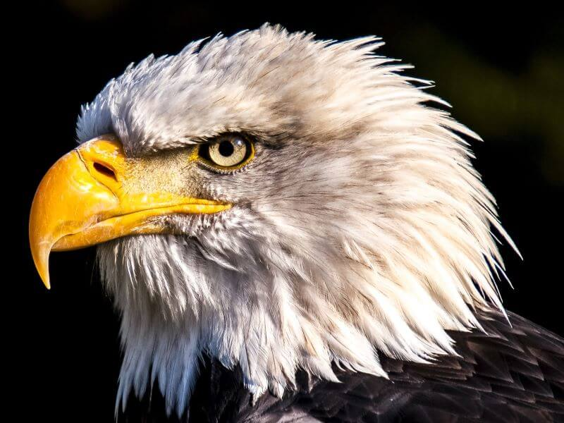
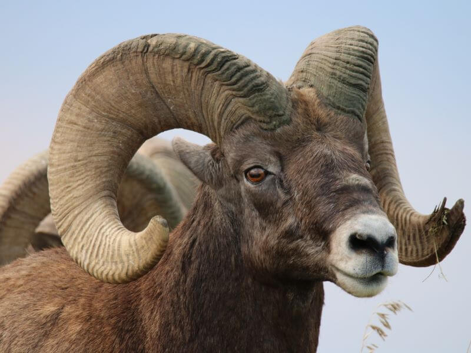
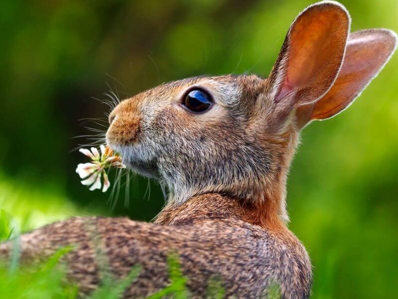

About My Photography

Animal photography invites us to slow down and see the quiet beauty that lives within nature. Every photograph captures a peaceful moment that might otherwise pass unnoticed, from the watchful eyes of a bird to the calm stillness of an animal resting in its natural space. Sometimes beauty is not loud or obvious; sometimes we have to be still, observe carefully, and listen with our eyes.
Through animal photography, viewers can connect with the peaceful side of the natural world and appreciate the details, emotions, and personality found in each image. This page was created to share that calm experience and to introduce the purpose behind my photography project.
This website was created as part of a Web Fundamentals class project focused on responsive web design, image galleries, and visual storytelling. The goal of this assignment was to combine creativity with technical web development skills using HTML, CSS, Bootstrap, and JavaScript while building a meaningful and engaging user experience.


Animal photography has always been a peaceful and meaningful form of expression for me. Through each photograph, I hope to capture the beauty, personality, and quiet emotion that animals naturally bring into the world around us.
This website showcases my appreciation for wildlife and nature through photography. From powerful eagles and bison to gentle rabbits and colorful reptiles, every image represents a unique moment that deserves to be admired and remembered.
One of my biggest goals with this gallery is to create a calming experience for visitors. I hope viewers can slow down, relax, and feel a sense of peace while exploring these photographs and connecting with nature through the lens of my work.
Thank you for visiting my page and sharing in my passion for animal photography. If you would like to connect, collaborate, or simply share your thoughts, you are always welcome to contact me.